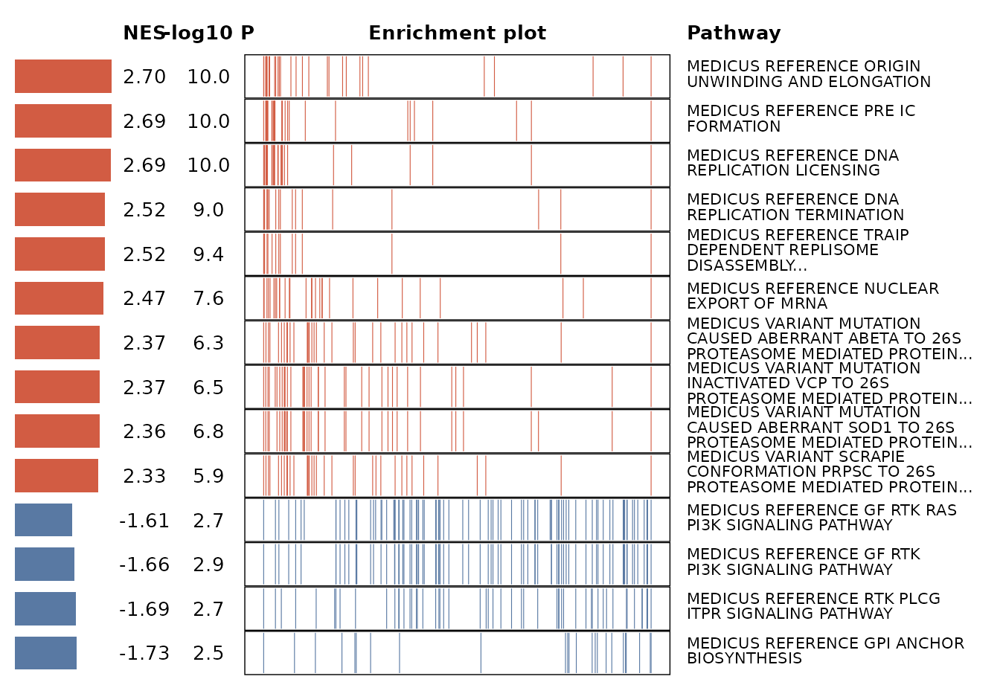

Introduction
Multi-gene signatures are increasingly used in precision medicine to capture complex biological processes and predict patient outcomes. Yet interpreting what a signature actually represents at the functional level remains difficult. Most existing tools are designed for analyzing ranked genes lists or differential expression results, not for directly evaluating a multi-gene signature across a transcriptome. As a result, researchers often fall back on arbitrary sample stratification (e.g., high vs. low groups) or indirect proxies, which can obscure the biology driving a signature’s predictive power.
SigFun was developed to close this gap. Instead of
forcing users to reshape their data into differential contrasts, SigFun
calculates genome-wide associations between a signature score (numeric
or binary) and every gene in the transcriptome, then ties those
associations to biological functions. The package handles both
continuous signatures (via correlation methods like Spearman, Pearson,
or Kendall) and binary signatures (via logistic regression), adapting
the statistical model to match your data type. Critically, it does this
through a flexible, multi-dimensional framework: users can prioritize
genes not only by their association strength with the signature, but
also by effect size, variability, clinical relevance, or custom metrics
- enabling richer, context-specific interpretations of what a signature
represents biologically. To support exploration across these dimensions,
SigFun includes 12 integrated visualization functions - from heatmaps
and networks to ridge plots and trees - that operate directly with the
analysis output, making the entire pipeline from calculation to
interpretation seamless and publication-ready. Built on the
SummarizeExperiment framework, SigFun integrates naturally
with standard Bioconductor workflows, allowing users to move directly
from upstream processing to signature interpretation without data
reformatting.
Key Features Summary
SigFun provides a comprehensive framework for interpreting multi-gene signatures through three core capabilities:
- Adaptive association modeling: Automatically calculates genome-wide gene-signature associations using the appropriate statistical method - correlation-based approaches for continuous signatures or logistic regression for binary classifications.
-
Multi-dimensional gene prioritization: Stores all
association metrics in a structured table (
cor.df) that users can extend with custom rankings (e.g., effect sizes, variability measures, clinical hazard ratios), enabling exploration of signature function from multiple biological perspectives. - Integrated visualization ecosystem: Offers 12 specialized plotting functions that translate enrichment results into publication-ready figures, supporting diverse analytical needs from pathway networks to distribution comparisons.
- Standard workflow: Built on SummarizedExperiment for seamless integration with Bioconductor ecosystem.
Note: This QuickStart vignette also demonstrates the
streamlined workflow (one-call sig2Fun) so you can
see the fastest path from inputs to interpretable
functions.
Vignettes at a Glance
QuickStart with Streamlined Workflow - Minimal working example and a demonstration of the streamlined
sig2Funworkflow using built-in test data. Start here to verify installation and understand the basic workflow.Data Preparation - How to build the required
SummarizedExperiment: expression,rowData,colData, andt2g(with quick validators). Start here if your data isn’t in SE format yet.Stepwise Workflow (
sigCor→ GSEA → plots) - Runs correlation and enrichment separately so you can inspect/modifycor.df, change ranking metrics, or swap enrichment settings. Use for advanced customization.Visualization Functions - What each SigFun plotting function does (bar, dot, heat, cnet, emap, tree, ridge, lollipop, UpSet, gsea, chord diagram) with concise usage examples. Use when crafting publication figures.
Custom Gene Ranking - Plug in your own gene-level stats (e.g.,
log2FC,zscore) by attaching acor.dfand settingranking.method. Use when you already computed rankings externally.
QuickStart Workflow (Streamlined)
Installation & Load Package
To install SigFun, ensure that you have R 4.4.0 or later
installed (see the R Project at http://www.r-project.org) and are familiar with its
usage.
SigFun package is also available on GitHub repository https://github.com/BioinfOMICS/SigFun. Before installing
SigFun, you must first install the core Bioconductor
packages. If you have already installed them, you can skip the following
step.
if (!requireNamespace("BiocManager", quietly=TRUE))
install.packages("BiocManager")
BiocManager::install()Once the core Bioconductor packages are installed, you can proceed
with installing SigFun.
## Update repositories
options(repos = c(
CRAN = "https://cloud.r-project.org/",
BiocManager::repositories()))
## Install dependencies and package
devtools::install_github(
"BioinfOMICS/SigFun",
build_vignettes = TRUE, dependencies = TRUE)After the installation is complete, you are ready to start using
SigFun. Now, let’s load the package first.
Quick Setup Checklist
-
Input container: a
SummarizedExperiment(SE) withassay$abundance: genes x samples expression matrix (numeric; no columns or rows should contain all values ofNA)rowData: gene annotations (must align row-order with
assays)colData: sample metatdata (includes your signature columns[s])
Ontology: a two-column
t2gdata.frame withgs_name,ensembl_gene(ID type should matchrowData$ensg_id). (For setup, refer to Ontology Database Setup)-
Method selection:
numeric signature →
cor.method = "spearman"(default) or"pearson"/"kendall"binary signature (0/1) →
cor.method = "logit"
Build a SummarizedExperiment
Note: See the Data Preparation vignette for more details.
SE_demo <- SummarizedExperiment::SummarizedExperiment(
assays = list(abundance = as.matrix(expr.data)),
rowData = S4Vectors::DataFrame(mapping, row.names = mapping$ensg_id),
colData = S4Vectors::DataFrame(SIG_MAT)
)
SE_demo
#> class: SummarizedExperiment
#> dim: 17341 127
#> metadata(0):
#> assays(1): abundance
#> rownames(17341): ENSG00000288642 ENSG00000288611 ... ENSG00000000005
#> ENSG00000000003
#> rowData names(3): ensg_id gene_symbol gene_biotype
#> colnames(127): 112606 122287 ... 995480 999264
#> colData names(2): sample_id valueSanity checks (optional but recommended)
stopifnot(
is.matrix(SummarizedExperiment::assay(SE_demo, "abundance")),
is.numeric(SummarizedExperiment::assay(SE_demo, "abundance")),
# No rows should be entirely NA
all(rowSums(is.na(SummarizedExperiment::assay(SE_demo, "abundance"))) < ncol(SummarizedExperiment::assay(SE_demo, "abundance"))),
# No columns should be entirely NA
all(colSums(is.na(SummarizedExperiment::assay(SE_demo, "abundance"))) < nrow(SummarizedExperiment::assay(SE_demo, "abundance"))),
# Row names must match ensg_id column
all(rownames(SummarizedExperiment::rowData(SE_demo)) == SummarizedExperiment::rowData(SE_demo)$ensg_id),
# Column names must match sample identifiers in colData
all(colnames(SummarizedExperiment::assay(SE_demo, "abundance")) == rownames(SummarizedExperiment::colData(SE_demo))),
# Dimensions must match
nrow(SummarizedExperiment::assay(SE_demo, "abundance")) == nrow(SummarizedExperiment::rowData(SE_demo)),
ncol(SummarizedExperiment::assay(SE_demo, "abundance")) == nrow(SummarizedExperiment::colData(SE_demo))
)(Optional) Use a Custom Ranking
If you already computed a metric (e.g., log2FC,
zscore), attach it as metadata(SE)$cor.df and
point ranking.method to that column.
Note: See the Custom Gene Ranking vignette for more details.
# This following codes are not ran. Use your own metrics.
custom <- S4Vectors::metadata(SE_demo)$cor.df # Use your own metric
# Example: create a signed –log10 p
custom <- cor.df %>% dplyr::mutate(signed_logp = sign(cor) * -log10(pval))
S4Vectors::metadata(SE_demo)$cor.df <- custom
SE_res2 <- sig2Fun(SE_demo, t2g = t2g, rankingMethod = "signed_logp", strings = "KEGG")Run sig2Fun()
Choose cor.method based on your signature type. The demo
data has binary signatures, thus, we will use "logit" to
calculate genome-wide associations.
Method selection options:
Numeric signatures:
cor.method = "spearman"(default),"pearson", or"kendall"Binary Signatures:
cor.method = "logit"
Important Note: The strings parameter
in sig2Fun() controls which heatmaps are
automatically generated, not which database are analyzed. Since we’ve
already filtered t2g to KEGG only, all enrichment results
will be KEGG pathways.
SE_res <- sig2Fun(
SE_demo,
t2g = t2g_kegg, # use KEGG subset here
corMethod = "logit", # for binary signatures
strings = c("KEGG") # used for heatmap plotting
)
#> using 'fgsea' for GSEA analysis, please cite Korotkevich et al (2019).
#> preparing geneSet collections...
#> GSEA analysis...
#> Warning in fgseaMultilevel(pathways = pathways, stats = stats, minSize =
#> minSize, : For some of the pathways the P-values were likely overestimated. For
#> such pathways log2err is set to NA.
#> Warning in fgseaMultilevel(pathways = pathways, stats = stats, minSize =
#> minSize, : For some pathways, in reality P-values are less than 1e-10. You can
#> set the `eps` argument to zero for better estimation.
#> leading edge analysis...
#> done...Under the hood objects
cor.df <- S4Vectors::metadata(SE_res)$cor.df
GSEA_result <- S4Vectors::metadata(SE_res)$gseaResult
head(cor.df)
#> gene cor pval
#> 1 ENSG00000288642 -0.70851096 0.0725071
#> 2 ENSG00000288611 0.20799480 0.5353397
#> 3 ENSG00000288596 -0.12307698 0.7242654
#> 4 ENSG00000288547 -0.13101046 0.7105807
#> 5 ENSG00000285975 0.07058971 0.8288483
#> 6 ENSG00000285294 0.13727120 0.7499630View Results
Correlation Table
# GSEA table preview
S4Vectors::as.data.frame(GSEA_result) %>%
dplyr::select(ID, Description, NES, pvalue, p.adjust, qvalue) %>%
DT::datatable(options = list(pageLength = 10, scrollX = TRUE), rownames = FALSE)Top Pathways by NES
GSEA_df <- S4Vectors::as.data.frame(GSEA_result)
# Top positively associated
GSEA_df %>%
dplyr::filter(grepl("KEGG", ID)) %>%
dplyr::arrange(dplyr::desc(NES)) %>%
dplyr::select(ID, Description, NES, pvalue, p.adjust) %>%
DT::datatable(options = list(pageLength = 10, scrollX = TRUE), rownames = FALSE)
# Top negatively associated
GSEA_df %>%
dplyr::filter(grepl("KEGG", ID)) %>%
dplyr::arrange(NES) %>%
dplyr::select(ID, Description, NES, pvalue, p.adjust) %>%
DT::datatable(options = list(pageLength = 10, scrollX = TRUE), rownames = FALSE)Heatmap Visualization
# Access precomputed heatmaps (keys follow the 'strings' you provided)
All_heatmaps <- S4Vectors::metadata(SE_res)$heatmap
All_heatmaps$KEGG
#> $KEGG
The heatmap displays the most significant pathways associated with your signature, organized into four panels:
1. NES Barplot (left) – Shows the strength and direction of pathway enrichment (positive = up-regulated, negative = down-regulated)
2. Statistical Summary (middle-left) – Lists NES values with corresponding p-values
3. Enrichment Plot (middle-right) – Shows how pathway genes are distributed across the ranked gene list (standard GSEA plot)
4. Pathway Names (right) – Official pathway descriptions
Additional Visualizations: Beyond the default
heatmap, SigFun includes 11 other plot types (dot plots, networks, ridge
plots, etc.) for exploring results from different perspectives. The
results object returned by sig2Fun() can be directly used
to generate these additional visualizations. See the Visualization
Functions vignette for examples.
Workflow Overview
A SigFun analysis links a gene signature to its underlying biology through four main stages, from raw expression data to interpretable functional output. The framework is built to accommodate both rapid exploration and detailed customization.
Core Analysis Stages
-
Data Input - Provide a
SummarizedExperimentcontaining:- an expression matrix (
assay) - feature metadata (
rowdata) - sample metadata (
colData) with the signature variable of interest.
- an expression matrix (
-
Association Calculation - SigFun computes
genome-wide associations between each gene and the signature score,
generating a comprehensive correlation table (
cor.df).- Continuous signatures → correlation (Spearman/Pearson/Kendall)
- Binary signatures → logistic regression
- Functional Enrichment — The ranked gene list (based on association strength or a custom ranking metric) is tested against pathway databases to identify functions enriched in signature-associated genes.
- Visualization & Interpretation — Explore and summarize results using 12 integrated visualization functions: pathway networks, heatmaps, ridge plots, lollipop plots, chord diagrams, and more.
Two Execution Modes
SigFun can be run in two ways depending on your needs:
| Mode | Description | When to Use |
|---|---|---|
| Streamlined | Runs association → enrichment → plotting in one step. Automatically produces ranked tables and core visualizations. | Most users; fast exploration or validation runs |
| Stepwise | Runs each stage separately, allowing inspection or modification of intermediate results (e.g., adding custom ranking metrics, using alternative enrichment methods). | Advanced customization, benchmarking, or method development |
Note: This QuickStart vignette uses the streamlined mode.
Appendices
Ontology Database Setup
# Prepare gene ontology data. We strongly recommend MsigDB.
# The following code can help you to
if (!require(msigdbr, quietly = TRUE)) {
install.packages("msigdbr")
library(msigdbr)
}
# Download human HALLMARKER ontology information
H_t2g <- msigdbr::msigdbr(species = "Homo sapiens", category = "H") %>%
dplyr::select(gs_name, ensembl_gene)
# Download human C2 pathway information
C2_t2g <- msigdbr::msigdbr(species = "Homo sapiens", category = "C2") %>%
dplyr::filter(gs_subcat %in% c("CP:BIOCARTA","CP:KEGG_MEDICUS",
"CP:REACTOME","CP:WIKIPATHWAYS")) %>%
dplyr::select(gs_name, ensembl_gene)
# Download human C5 ontology information
C5_t2g <- msigdbr::msigdbr(species = "Homo sapiens", category = "C5") %>%
dplyr::filter(gs_subcat %in% c("GO:BP","GO:CC","GO:MF")) %>%
dplyr::select(gs_name, ensembl_gene)
# Combine them
t2g <- rbind(H_t2g, C2_t2g, C5_t2g)Session Information
#> R version 4.4.3 (2025-02-28)
#> Platform: x86_64-pc-linux-gnu
#> Running under: CentOS Stream 9
#>
#> Matrix products: default
#> BLAS/LAPACK: FlexiBLAS OPENBLAS-OPENMP; LAPACK version 3.9.0
#>
#> locale:
#> [1] LC_CTYPE=en_US.UTF-8 LC_NUMERIC=C
#> [3] LC_TIME=en_US.UTF-8 LC_COLLATE=en_US.UTF-8
#> [5] LC_MONETARY=en_US.UTF-8 LC_MESSAGES=en_US.UTF-8
#> [7] LC_PAPER=en_US.UTF-8 LC_NAME=C
#> [9] LC_ADDRESS=C LC_TELEPHONE=C
#> [11] LC_MEASUREMENT=en_US.UTF-8 LC_IDENTIFICATION=C
#>
#> time zone: Asia/Taipei
#> tzcode source: system (glibc)
#>
#> attached base packages:
#> [1] stats graphics grDevices utils datasets methods base
#>
#> other attached packages:
#> [1] DT_0.34.0 dplyr_1.1.4 SigFun_0.99.11 BiocStyle_2.34.0
#>
#> loaded via a namespace (and not attached):
#> [1] RColorBrewer_1.1-3 rstudioapi_0.17.1
#> [3] jsonlite_2.0.0 magrittr_2.0.3
#> [5] ggtangle_0.0.7 farver_2.1.2
#> [7] rmarkdown_2.29 fs_1.6.6
#> [9] zlibbioc_1.52.0 ragg_1.3.3
#> [11] vctrs_0.6.5 memoise_2.0.1
#> [13] ggtree_3.14.0 rstatix_0.7.2
#> [15] htmltools_0.5.8.1 S4Arrays_1.6.0
#> [17] forcats_1.0.0 broom_1.0.10
#> [19] SparseArray_1.6.2 Formula_1.2-5
#> [21] gridGraphics_0.5-1 sass_0.4.10
#> [23] bslib_0.9.0 htmlwidgets_1.6.4
#> [25] desc_1.4.3 plyr_1.8.9
#> [27] cachem_1.1.0 igraph_2.1.4
#> [29] lifecycle_1.0.4 pkgconfig_2.0.3
#> [31] gson_0.1.0 Matrix_1.7-4
#> [33] R6_2.6.1 fastmap_1.2.0
#> [35] GenomeInfoDbData_1.2.13 MatrixGenerics_1.18.1
#> [37] digest_0.6.37 aplot_0.2.8
#> [39] enrichplot_1.26.6 patchwork_1.3.2
#> [41] AnnotationDbi_1.68.0 S4Vectors_0.44.0
#> [43] crosstalk_1.2.2 textshaping_1.0.3
#> [45] GenomicRanges_1.58.0 RSQLite_2.4.3
#> [47] ggpubr_0.6.1 labeling_0.4.3
#> [49] httr_1.4.7 abind_1.4-8
#> [51] compiler_4.4.3 bit64_4.6.0-1
#> [53] withr_3.0.2 S7_0.2.0
#> [55] backports_1.5.0 BiocParallel_1.40.2
#> [57] carData_3.0-5 DBI_1.2.3
#> [59] R.utils_2.13.0 ggsignif_0.6.4
#> [61] rappdirs_0.3.3 DelayedArray_0.32.0
#> [63] tools_4.4.3 ape_5.8-1
#> [65] R.oo_1.27.1 glue_1.8.0
#> [67] nlme_3.1-168 GOSemSim_2.32.0
#> [69] grid_4.4.3 reshape2_1.4.4
#> [71] fgsea_1.32.4 generics_0.1.4
#> [73] gtable_0.3.6 R.methodsS3_1.8.2
#> [75] tidyr_1.3.1 data.table_1.17.8
#> [77] car_3.1-3 XVector_0.46.0
#> [79] BiocGenerics_0.52.0 ggrepel_0.9.6
#> [81] pillar_1.11.0 stringr_1.5.2
#> [83] yulab.utils_0.2.1 splines_4.4.3
#> [85] treeio_1.30.0 lattice_0.22-7
#> [87] bit_4.6.0 tidyselect_1.2.1
#> [89] GO.db_3.20.0 Biostrings_2.74.1
#> [91] knitr_1.50 bookdown_0.44
#> [93] IRanges_2.40.1 SummarizedExperiment_1.36.0
#> [95] stats4_4.4.3 xfun_0.53
#> [97] Biobase_2.66.0 matrixStats_1.5.0
#> [99] stringi_1.8.7 UCSC.utils_1.2.0
#> [101] lazyeval_0.2.2 ggfun_0.2.0
#> [103] yaml_2.3.10 evaluate_1.0.5
#> [105] codetools_0.2-20 tibble_3.3.0
#> [107] qvalue_2.38.0 BiocManager_1.30.26
#> [109] ggplotify_0.1.2 cli_3.6.5
#> [111] systemfonts_1.2.3 jquerylib_0.1.4
#> [113] Rcpp_1.1.0 GenomeInfoDb_1.42.3
#> [115] png_0.1-8 parallel_4.4.3
#> [117] pkgdown_2.1.3 ggplot2_4.0.0
#> [119] blob_1.2.4 clusterProfiler_4.14.6
#> [121] DOSE_4.0.1 viridisLite_0.4.2
#> [123] tidytree_0.4.6 scales_1.4.0
#> [125] ggridges_0.5.7 purrr_1.1.0
#> [127] crayon_1.5.3 rlang_1.1.6
#> [129] cowplot_1.2.0 fastmatch_1.1-6
#> [131] KEGGREST_1.46.0